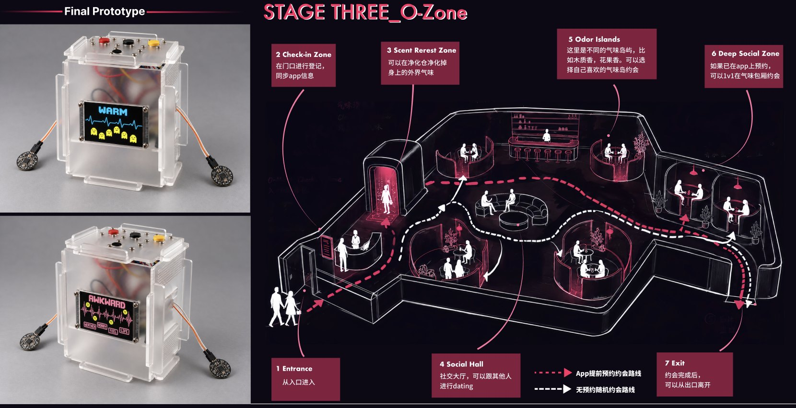

WELCOME
WELCOME
01 / ABOUT ME 2023—2026
毕耀匀Yaoyun Bi
交互设计 · AIGC 影像 · 游戏
喜欢观察生活中的细节，从中寻找设计的灵感。
中国传媒大学 · 戏剧影视学院
影视摄影与制作（虚拟影像制作） / 2027 届
点击照片 · 滚动切换
02 / CV
个人简历
学习经历、工作实践与奖项。
01 / EDUCATION
中国传媒大学 · 本科戏剧影视学院 · 虚拟影像制作 本科
GPA 3.85 / 4.00 · 专业排名 1 / 31
GPA 3.85 / 4.00 · 专业排名 1 / 31
中国传媒大学 硕士（推免保研）戏剧影视学院 · 智能视听创作
02 / EXPERIENCE光明网 / 爱奇艺 / 央视AIGC 制作、数字资产与影视宣发
03 / HONORS国家奖学金 / 中国好创意全国一等奖“挑战杯”北京市二等奖、北京市三等奖 · 大广赛、学院杯全国优秀奖 · 京彩大创北京市三等奖


03 / SPECULATIVE DESIGN · 2026
气味社交 MatchScent
如果气味成为社交语言，我们会如何认识彼此？用释香装置、应用和约会空间，讨论亲密关系中的感官技术与个人边界。
思辨设计 / 多感官交互 / 装置查看项目 ↗
04 / FILM & EXPERIMENTS
影像与其他实践
在虚拟场景、文化影像和 AI 动画之间继续尝试。

《太空之吻》为现场影像片段。其他带播放按钮的作品可直接在本站观看。